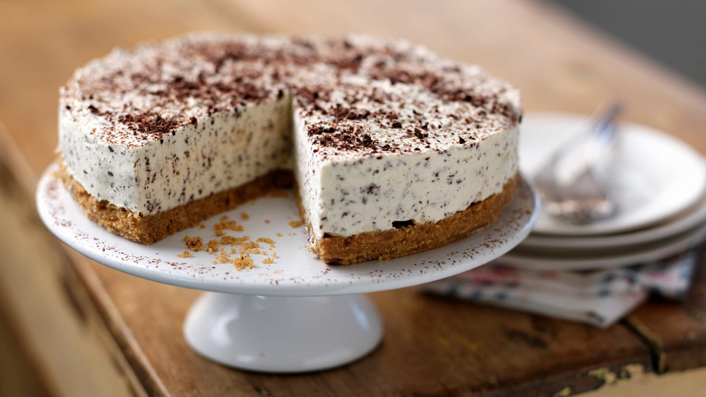

Baileys Cheesecake

Description
Use a smooth, creamy Irish liqueur, like Baileys, to give this no-bake cheesecake the wow factor. Top with grated chocolate or a dusting of cocoa. It's a fab make-ahead Christmas dessert that's easy to put together and always impresses.
Ingredients
- 100g/3½oz butter, plus extra for greasing
- 250g/8¾oz digestive biscuits, crushed
- 600g/1lb 5oz full-fat cream cheese
- 25ml/1fl oz Irish cream liqueur, such as Bailey's
- 100ml/3½oz icing sugar
- 300ml/10½oz double cream, whipped
- 100g/3½oz grated chocolate (dark or milk chocolate)
To Decorate
- 200ml/7¼oz double cream, whipped (optional)
- cocoa powder or more grated chocolate
Steps
- Melt the butter in a pan and add the crushed digestive biscuits. Mix well until the biscuits have absorbed all the butter.
- Line the base of a 18cm/7in springform tin with baking paper and lightly grease the sides with melted butter.
- Press the biscuit mixture into the bottom of the prepared tin in an even layer. Put in the fridge for 1 hour or until the base is firm and set.
- Meanwhile, prepare the filling. Lightly whip the cream cheese then beat in the Irish cream and icing sugar. Fold in the whipped cream and grated chocolate. When smooth, spoon evenly on top of the biscuit base.
- Return to the fridge for a further 2 hours, or until the filling is set.
- Once set, remove from the tin and decorate with whipped cream (if using) and cocoa powder or grated chocolate dusted over the top.
Home